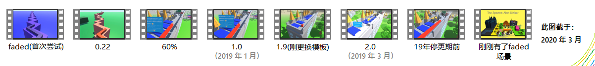
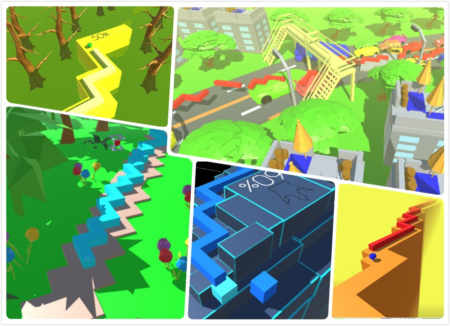

DLFM The Spectre
故事
这是我制作的唯一一个关卡。
我第一次尝试制作饭制关卡可能是在2018年的暑假。那时的我只是认为这件事像做PPT一样简单，丝毫不顾及Unity引擎运行游戏所需的脚本，代码等。 当时的我注册Unity账号，在纯英文界面里甚至认不得密码“需含有大写字母”的要求。哎，太菜了（感慨）。 后来看过大佬的教程视频，用大佬的模板开始做这个关卡了。当然，一个关卡不能只有布景那么简单。但我什么都不会，硬是把这个关卡做成了全静态的，真就一点动画也没有......，于是， 1.0版发布了。 过了不久，不知道干了什么（好像是一点准备没有就给这关升了Unity版本，当然我也根本不会做什么准备）就出现了代码编译问题，把布景倒进了新模板里，两个月发了2.0版， 后面就一直搁着了。 2022年初重新开始填烂坑，把以前手贱整的很多问题稍微解决了一些（比如之前手贱改了键位和输入方式，然后编辑器内直接不能控制游戏了；还有UI结构的许多小毛病）。 我虽然技术上仍然很菜，但自我感觉对待这些精细的事比以前认真了许多。 虽然看上去我以后没多少时间继续做这些了（好遗憾），但我热情不减，这些经历以后也应该会一直伴随我，引燃下一段旅途。 
2020 年做的海报，用Windows自带画图画的...
答辩（自问自答）
Q 我看不出来是神马主题？过年回家？树林？堵车？周游世界？...A 很难想象我自己创作这玩意时的精神状态...

DLFM The Spectre
目前最新：v2.9.5（公开的：v2.9.4.2022b5）